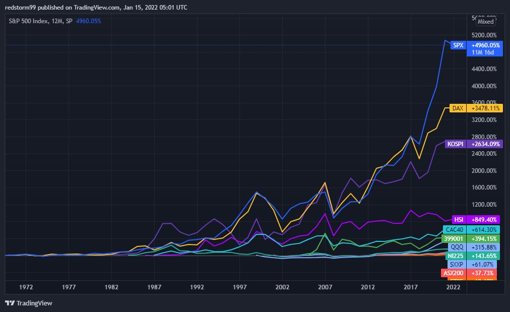
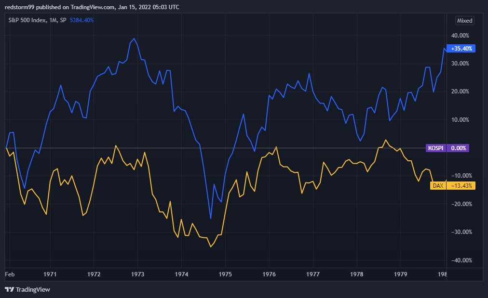
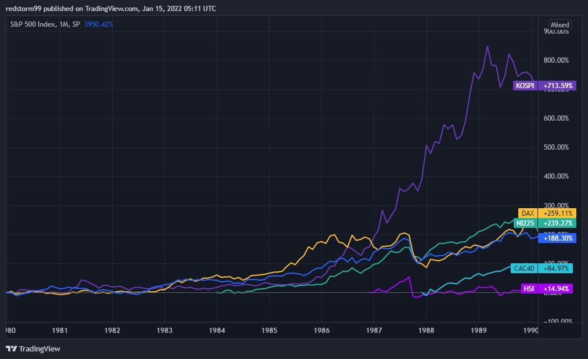
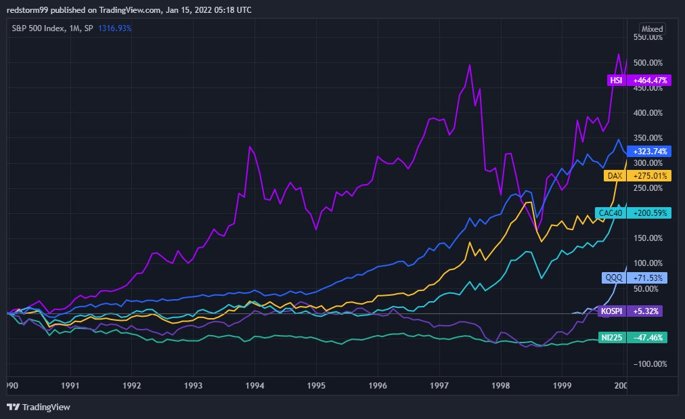
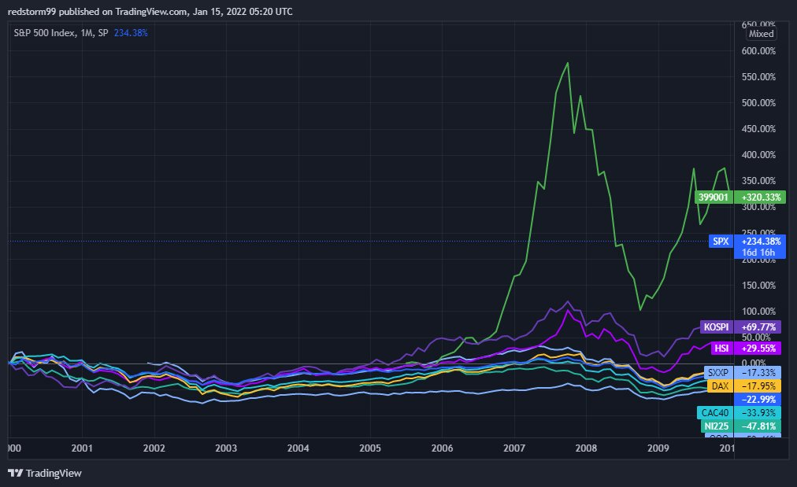
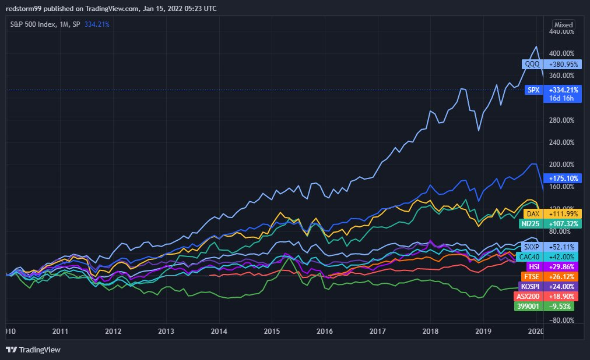
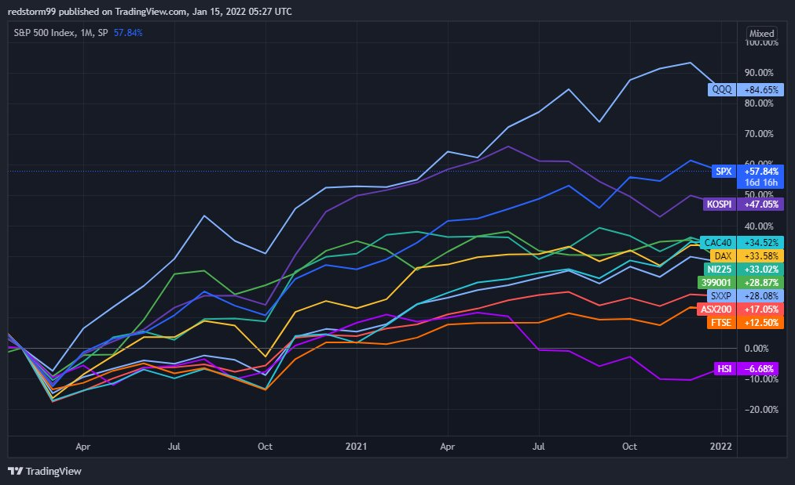

On U.S. markets and Global Peers

The US stock indexes have been on an incredible run compared to their global peers over the last decade. Yet the historic bull run which resulted in euphoria among retail investors is not going to last forever. Let’s take a look at history and global markets. If we’re lucky, we’ll be able to make some predictions about US markets in the coming years.
The S&P 500 has been around since the 19th century, but its first competitor we are interested in didn’t begin until 1970 - the DAX, a German index still important today. Since the DAX was founded, here are the returns of 10 major indices

If we look closely, we see that the returns generally just correlate to the length of time that the indices have been active. It’s much like how saving for retirement at 20 compounds much more than starting at 40. This is no different. We need to zoom in.
From 1970 to 1980, the DAX and SPX were generally correlated, unsurprisingly. The US market’s S&P 500 outperformed by a large margin however. In 1980, the KOSPI was developed to track South Korean markets.

From 1980 to 1990, KOSPI went on an absolute tear, making the US and Germany look like paupers in comparison. The DAX even got revenge from the previous decade, outperforming the SPX by nearly 100%. That’s interesting - reversion to the mean? Let’s keep digging and see.

In that same decade, several other indices came online. NI225 and HSI became relevant tracking Asian markets, while CAC40 tracked the French markets. In the 90’s the HSI - the worst performer of the previous decade - destroyed the competition. KOSPI, the darling child, ended the decade down. More reversion - interesting. The SPX ended up middle of the pack again, even though it was in the dot com bubble.

At the turn of the century, a new darling emerged in Asia. Meanwhile, the SPX actually went on a tear compared to its peers. HSI became human again. The majority yielded negative returns after a scorching bull run the previous decade.

Last decade, from 2010 to 2020, the 399001 index (Shenzen, China) went from best performer to worst. Meanwhile, US markets absolutely destroyed the competition. But notice - it wasn’t anything particularly special compared to other top performing indices in past decades.

The last 2 years aren’t enough to break down this decade, but the US run has continued.

What do I take from all this? It seems clear to me that the best performers typically revert to normalcy - often through moving to the bottom of the pack over the next decade.
Conversely, bottom performers typically rise. It’s just a law of averages, really.
But what this implies for US equities is not the most exciting thing in the world. If the past repeats itself, it seems likely that US indices should perform worse than their global peers in the next decade or two. While some may panic and yell to “SHORT EVERYTHING”, the reality is more nuanced. Even when the top performers reverted to the mean, most of them go on to yield positive returns the following decade. It’s just that their competitors yielded even better returns
To be sure, a global recession would make all falter. Just as a global bull market would enable every ship to rise with the tide.
Anyways, I look at all this data and leave with the undeniable impression that we should seek to rotate funds into markets outside of the US in the coming decade or two. It will be there that the best returns are likely to be found.
To be sure, the US markets can continue to rip for months, even years more. But the music must eventually stop. To believe otherwise is simply repeating the mistakes of those who came before us.